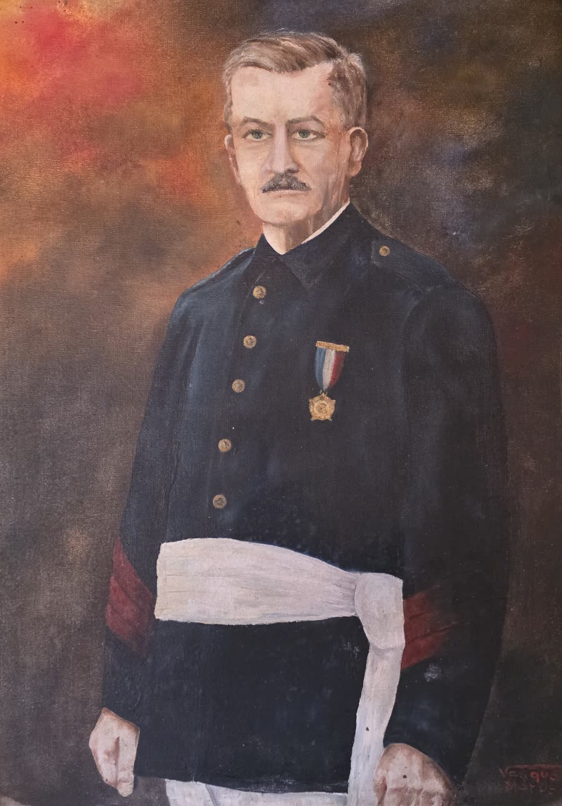
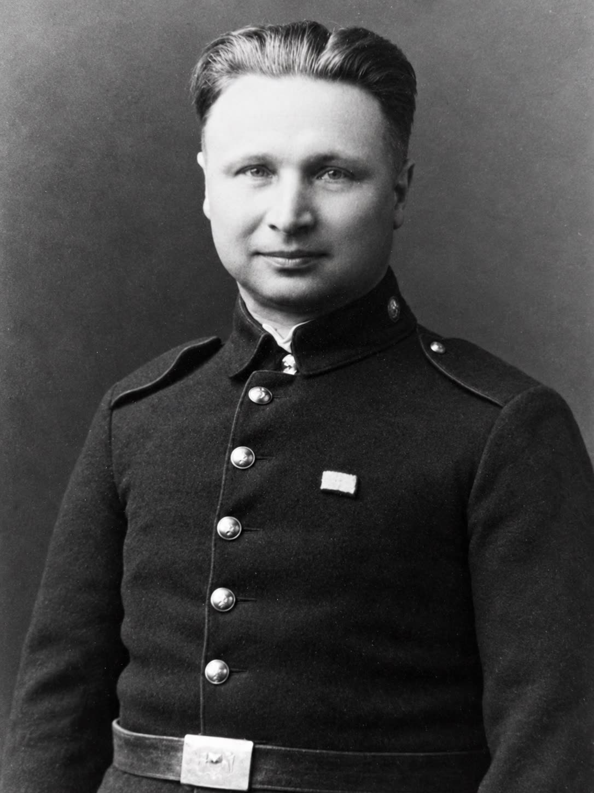
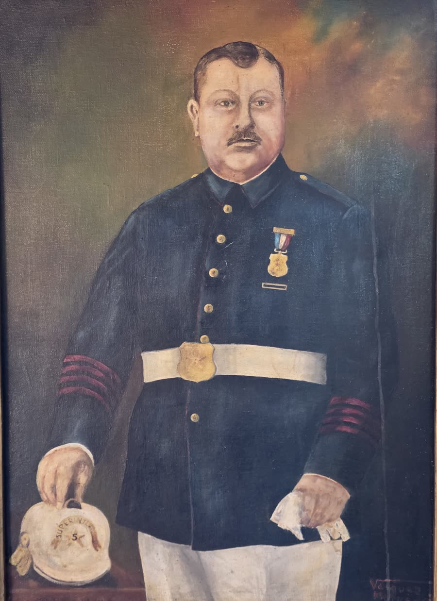
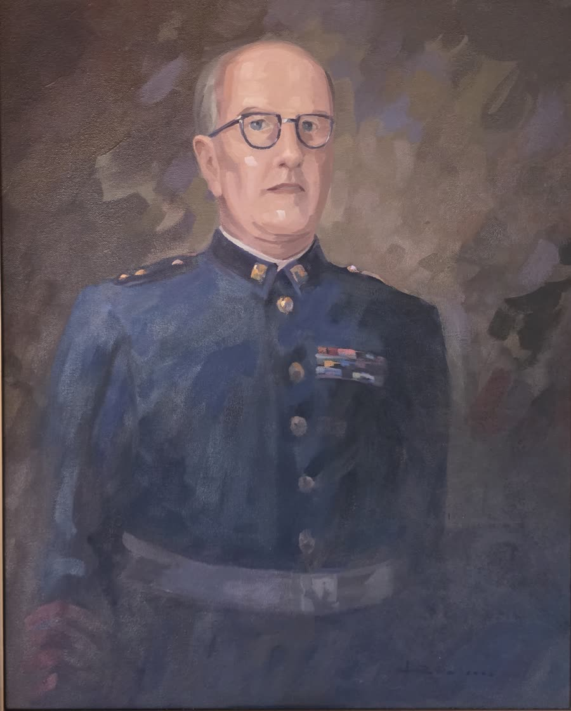
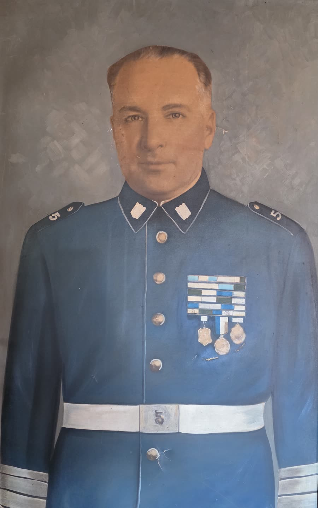
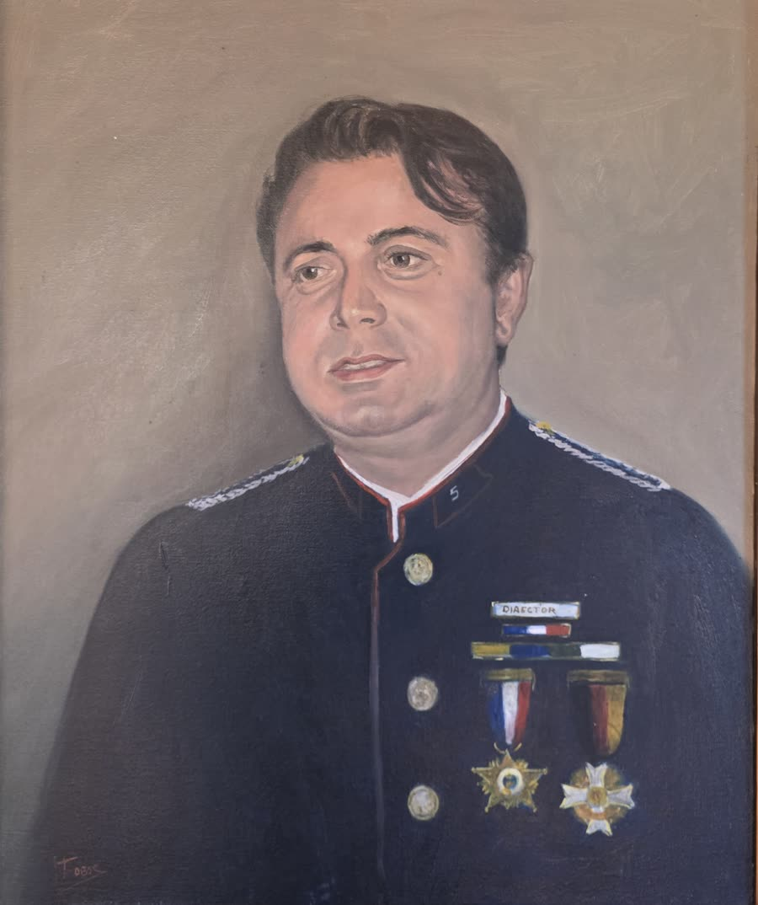

Eugenio Delpín Lepre
Fundador y primer Capitán de la Quinta (1908). Superintendente del Cuerpo de Bomberos de Talcahuano, 1928–1934

Ricardo Setz Schlegel
Fundador y primer Secretario-Tesorero de la Quinta (1908). Miembro Honorario desde el 29 de enero de 1960

Eduardo Schuyler Ziebrecht
Fundador y primer Oficial de Mar de la Quinta (1908). Superintendente del Cuerpo de Bomberos de Talcahuano, 1917–1923, y Superintendente Honorario, 1924–1938

Luis de la Cerda Schuyler
(1904–1983). Médico. Ingresó a la Quinta en 1928 y en 1932 fue elegido Director de la compañía. Superintendente del Cuerpo de Bomberos de Talcahuano, 1935–1979

Juan Guillermo Sosa Severino
(1900–1983). Ingresó a la Quinta el 31 de julio de 1919 y ocupó todos los cargos ejecutivos de la compañía. Comandante del Cuerpo de Bomberos de Talcahuano, 1937–1968, el período más largo en ese cargo. La Brigada Juvenil lleva su nombre

Fernando Etcheverry Urra
Superintendente del Cuerpo de Bomberos de Talcahuano y Director de la Junta Nacional de Bomberos

Ariel Duffau Gálvez
Director de la Quinta hasta 2003. Lideró la construcción del cuartel de Villa Independencia (2001)